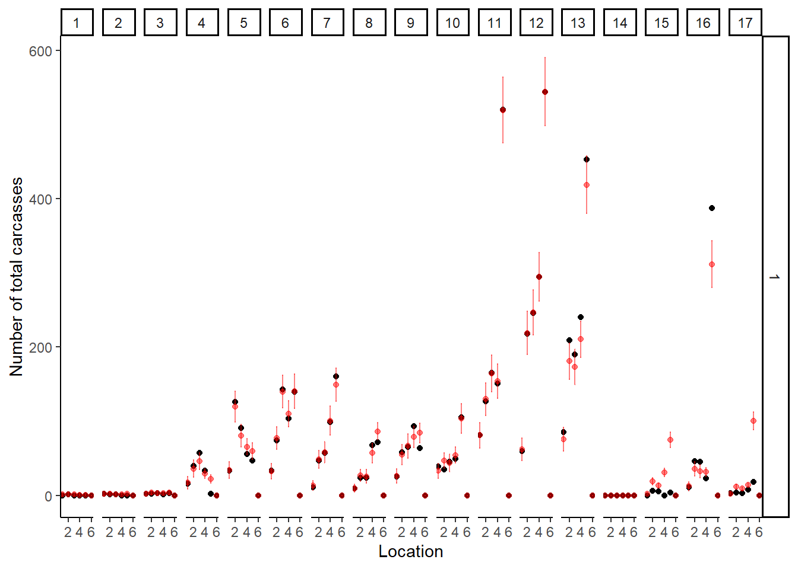
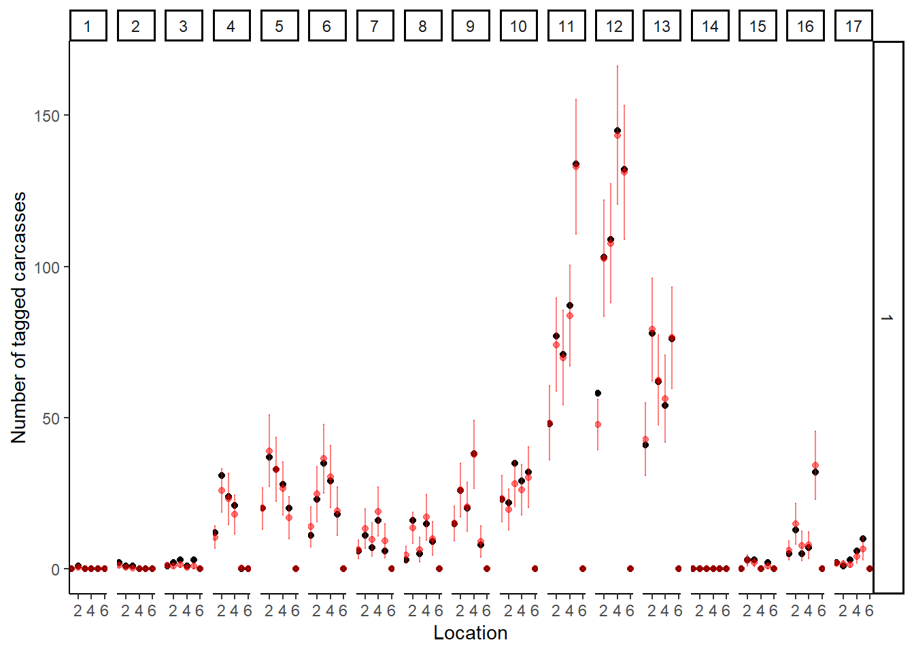
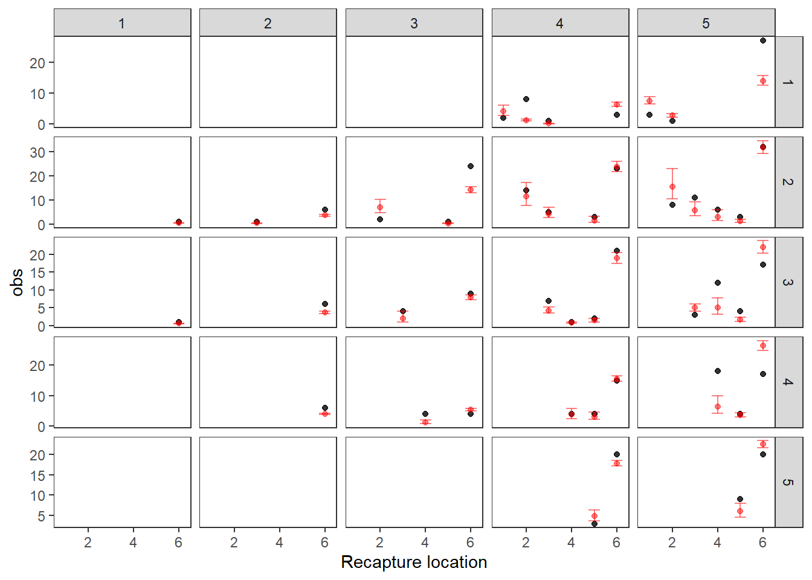
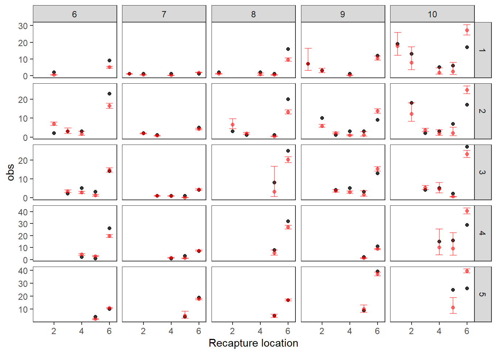
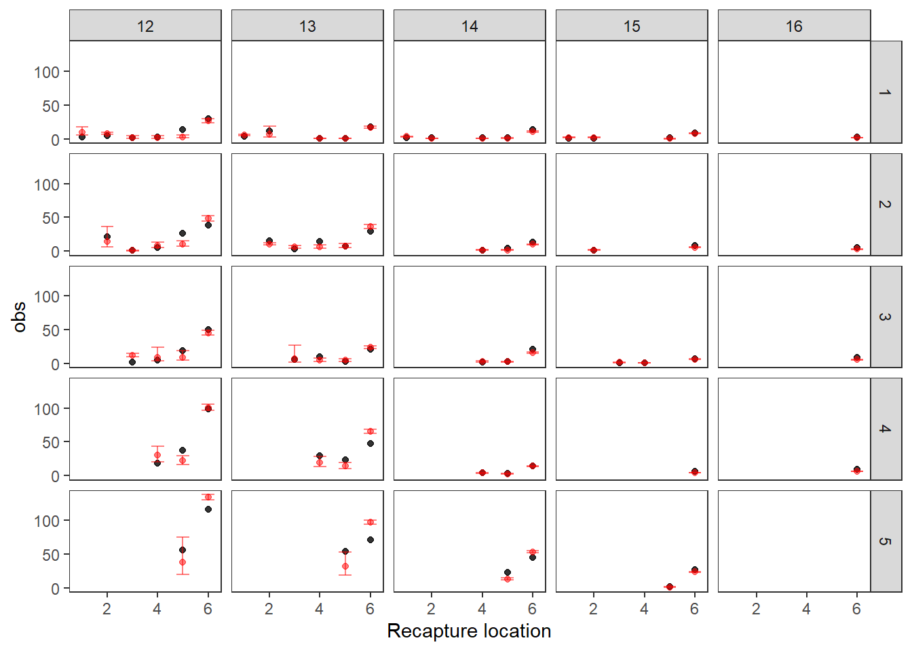
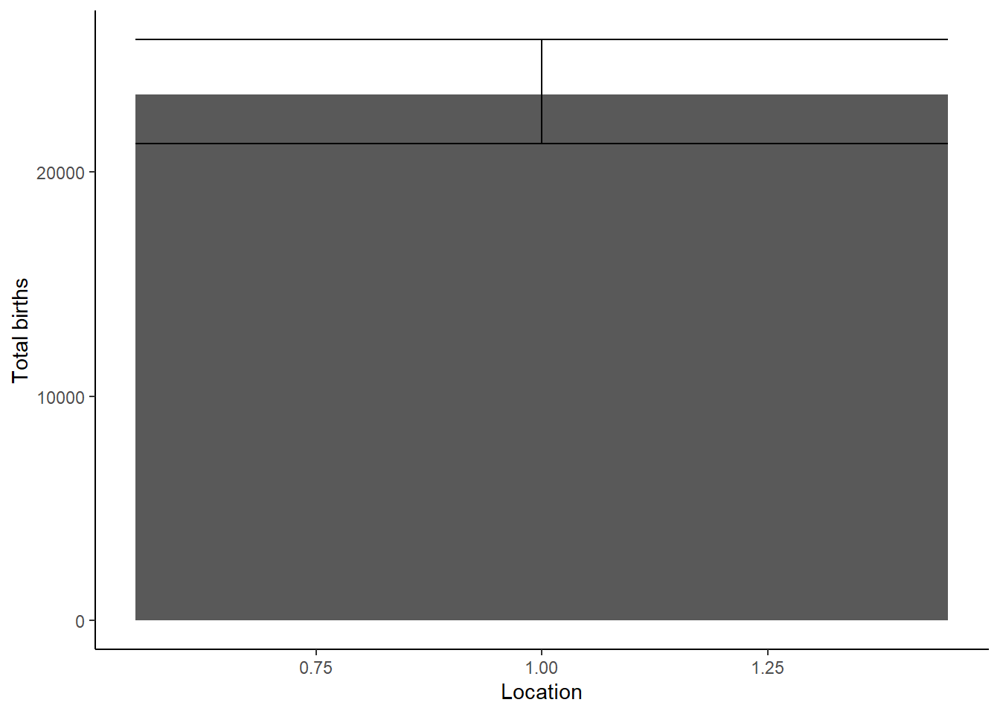
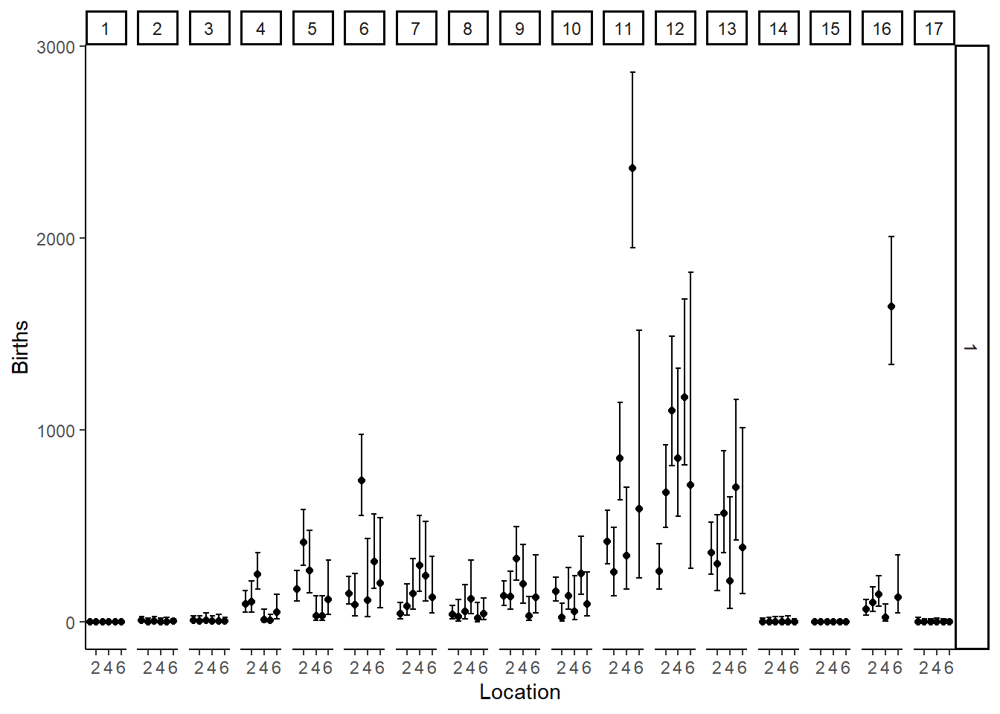
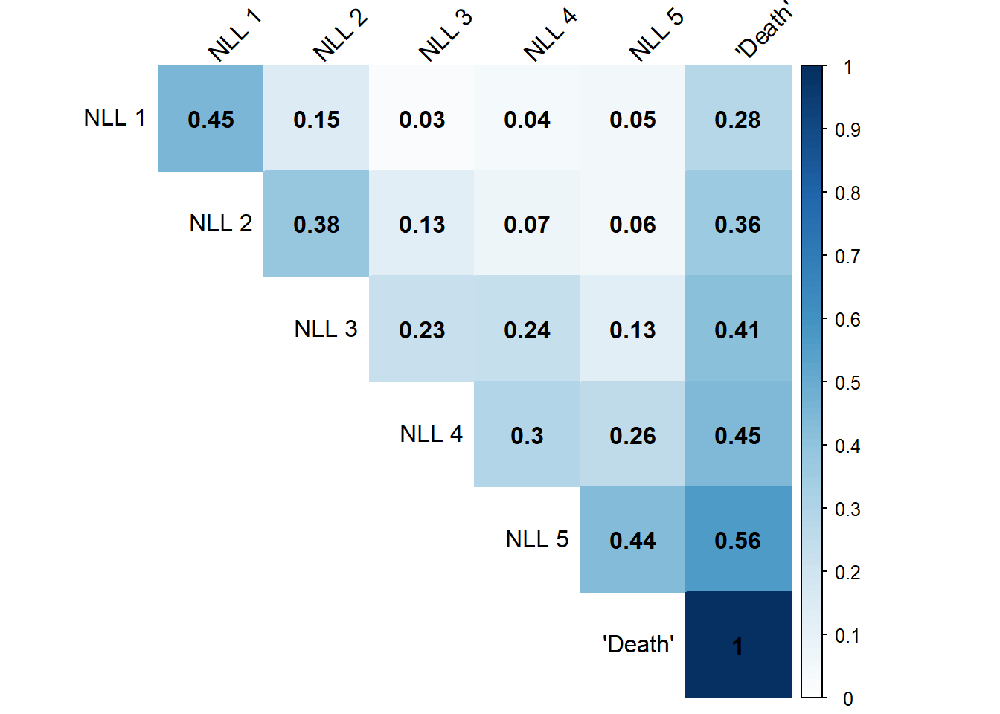
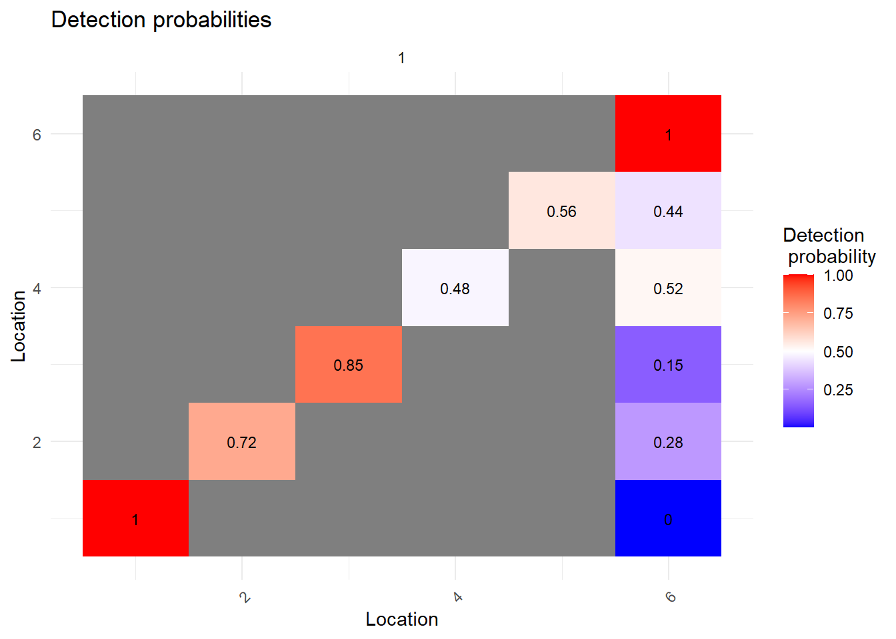
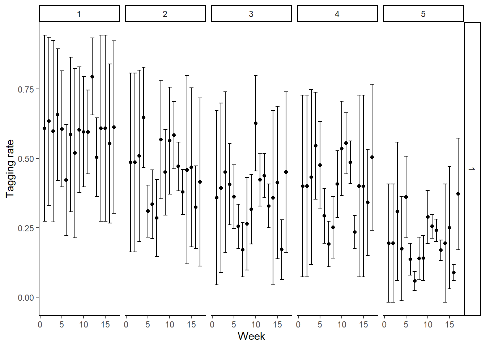

Kale : Lewis River Carcassess
Model
Births
The number of carcasses births in each time period \(t\) is equal to,
\[ \mathrm{b}_t =exp(\mu_B \times\varepsilon^\mathrm{b}_t) \]
where \(\mathrm{b}_t\) is the number of carcasses arriving during time period \(t\) , \(\mu_B\) is the average number of carcasses arriving across all time periods, and \(\varepsilon^B_t\) is the random variability in the carcasses arrival process.
In the Lewis River, carcasses can be born into any one of five locations (i.e., states). The distribution of births into those locations is governed by a vector of probabilities that sum to one, \(\boldsymbol{\mathrm{\pi}}\)
\[ \pi_s = \frac{exp(\beta_s)}{\sum_s exp(\beta_s)}, \forall s<6 \]
where the parameter \(\beta_{s=5}\) is fixed to zero, and \(\pi_6\) is equal to zero. The number of carcass births in state/location \(s\) during time period \(t\) is equal to
\[ B_{t,s} = \mathrm{b}_t\times\pi_s \]
Carcass abundance
The total number of carcasses in location s at time t is
\[ \mathbf{\mathrm{N}}_{t,\bullet} = \boldsymbol{\Phi}_{\Delta t}^\mathrm{T}\bigr(\mathbf{\mathrm{N}}_{t-\Delta t,\bullet} + \mathbf{\mathrm{B}}_{t,\bullet}\bigr) \]
where \(\mathbf{\mathrm{N}}_{t,\bullet}\) is the vector of total carcasses at time \(t\) for all \(s\) states, \(\boldsymbol{\Phi}_{\Delta t}^\mathrm{T}\) is the transpose of state transition probability matrix, and \(\Delta t\) is the time between the current time-step and the previous time step. The transposition, \(\mathrm{T}\) of the state transition matrix is necessary because the population model assumes the initial states are represented by rows, whereas the mark-recapture process assumes that initial states are represent by columns. The population in the previous time-step is \(\mathbf{N}_{t-\Delta t,\bullet}\). The vector of of births time-step t ( \(\mathrm{B}_{t,\bullet}\) ) is multiplied by the state transition probability matrix, because some of the births would be expected to have transitioned to the death state before they were surveyed at time t. Failure to include would result in a model that assume the only non-detect births were do to detection efficiency and not the fact that some carcasses are simply will never be recaptured.
The initial condition for the abundance process is simply the births,
\[ \mathbf{\mathrm{N}}_{1,\bullet} = \boldsymbol{\Phi}_{\Delta t}^\mathrm{T} \mathrm{B}_{1,\Delta t,\bullet} \]
where, \(\Delta t\) is the would be equal to the time period between the initial survey and the when the first carcass is likely to have show up on the spawning grounds.
State transition probability matrix, \(\Phi_{\Delta t}\)
The state transition probability matrix describes the probability of a carcass remaining in its tagging location, transitioning and being recapture to another location, or never being recaptured again. The probability matrix \(\Phi_{\Delta t}\) is derived from the transition rate matrix \(\mathrm{Q}\) and the difference in time \(\Delta t\) between surveys.
If there are \(ns\) locations, then the dimension of the transition matrix is \(ns \times ns\).
\[ \mathrm{Q} = \begin{bmatrix} -\sum_{j\neq1}q_{1j} & q_{12} & \cdots & q_{1n} \\ q_{2j} & -\sum_{j\neq2}q_{2j} & \cdots & q_{2n} \\ \vdots & \vdots & \ddots & \vdots \\ 0 & 0 & \cdots & 0 \end{bmatrix} \]
The off-diagonal values describe the instantaneous rate (i.e., ratio per unit time) that individual transitions from one state to another. For instance, \(q_{12}\) describes the transition rate from state 1 to state 2 per unit time, \(q_{21}\) describes the transition rate from state 2 to state 1. Because the transition rate is a Markov process, the rows must sum to 0; thus, the diagonal elements (i.e., the rate at which an individual remains in a state) is \(-\sum_{j\forall j\neq i}q_{i,j}\) . The last row of the matrix is called the absorbing state – the probability of transitioning from death to one of the other states – which is zero. The parameters of the transition rate matrix \(q_{\bullet,\bullet}\) are the parameters of the model to be estimated. These parameters do not need to be fixed. They can be genrelized as a function of the intrinsic attributes of the carcass (e.g., size or sex) or extrinsic attributes of the environment (e.g., distance between locations or flow during the survey period), where the coefficients of the transition are estimated.
The parameters of state transition probability matrix are derived from the exponent of the transition rate matrix \(\mathrm{Q}\).
\[ \Phi_{\Delta t} = e^{\mathrm{Q}\times \Delta t} = \begin{bmatrix} \phi_{1j} & \phi_{12} & \cdots & \phi_{1n} \\ \phi_{2j} & \phi_{2j} & \cdots & \phi_{2n} \\ \vdots & \vdots & \ddots & \vdots \\ 0 & 0 & \cdots & 1 \end{bmatrix} \]
where, \(e\) is the matrix exponent. Exponentiation of the rate matrix results in a transition matrix where the sum of the rows are now one rather than zero. Most statistical software packages have a matrix exponent function (e.g., Matrix::expm is the matrix exponential function R).
Lastly, the transition probability matrix fully accounts for the entire carcass sampling design. In particular, the recovery of a carcass results in a change of state, because the tail of the carcass is removed and it is considered to have transitioned to the dead. The transition time between a carcass being alive and dead is nearly instantaneous \(\Delta t \rightarrow 0\), which means the transition probability matrix approaches the identity matrix. The importance of this is explained in the mark-recapture likelihood.
\[ lim_{\Delta t \rightarrow 0}\Phi_{\Delta t} = e^{\mathrm{Q}\times \Delta t} = \begin{bmatrix} 1 & 0 & \cdots & 0 \\ 0 & 1 & \cdots & 0 \\ \vdots & \vdots & \ddots & \vdots \\ 0 & 0 & \cdots & 1 \end{bmatrix} = \mathrm{I}_{ns}\]
Carcass sampling rate
The carcasses sampling rate is a function of the observed carcasses at time-step t in location s, \(C_{t,s}\), and the predicted total number of carcasses at time-step t in location s, \(\mathrm{N}_{t,s}\),
\[ C_{t,s} \sim Bin(N_{t,s}; \psi_s) \]
where \(\psi_s\) is the sampling rate of carcasses in location s. Similar the transition rate parameters, the sampling rate parameters can be generalized to include fixed and random effects associated with intrinsic and extrinsic characteristics and random levels of variability.
Carcass detection rate
The carcasses detection rate is a function of the observed tagged/marked carcasses at time-step t in location s, \(M_{t,s}\), and the predicted total number of carcasses at time-step t in location s, \(\mathrm{C}_{t,s}\),
\[ M_{t,s} \sim Poisson(C_{t,s}p_s ) \]
where \(p_s\) is the sampling rate of carcasses in location s, which may also be generalized fixed and random effects related with intrinsic and extrinsic characteristics and random levels of variability.
Mark-recapture model
The mark-recapture model considers the joint probability of the survival transition matrix \(\Phi\) and the detection probability \(\mathbf{p}\).
The mark-recapture model can be an individual-based model, or group according to fish attributes. For the \(i^{th}\) carcass, there is the tagging week \(tw_i\), the recapture week \(rw_i\), the tagging location \(tl_i\) , and the recapture location \(rl_i\).
For caracsses that are recaptured, the joint probability of its detection history is,
\[ pr_i = \boldsymbol{\mathrm{\delta}}_{i,j} \times \biggr[ \prod_{j=(tw_i+1)}^{j=(rw_i-1)}\Phi_{\Delta t_{i,j}} \times diag(\mathrm{p}_{:,6})\biggr] \times \Phi_{\Delta t_{i,j}} \times diag(\mathrm{p}_{:,rl_i}) \times \mathrm{I}_{ns} \times \mathrm{1} \]
where, \(\boldsymbol{\delta}_i\) is a \(1\times 6\) matrix with a one at column \(tl_i\) and zeros elsewhere, \(\boldsymbol{\Phi}_{\Delta t_{i,j}}\) is the 6X6 transition probability matrix related to the time between \(j^{th}\) and \(j^{th}-1\) survey for the \(i^{th}\) carcass ( \(\Delta_{t_{i,j}}\) ), \(diag(\mathrm{p}_{:,6})\) is a matrix with the non-detection probabilities on the diagonal, \(diag(\mathrm{p}_{:,rl_i})\) is a matrix with the column of the recapture location along the diagonal, and \(\mathrm{1}\) is a vector of ones of length 6. The part in the square brackets is the nondetections.
While the matrix, \(\mathrm{I}_{ns}\) , has no effect on the likelihood, it is important to understand why this model provides a complete accounting of the survey design. The first observation after the recapture of the \(i^{th}\) carcass is uniquely different than the non-detection and recapture detection preceding it. First, for a dead carcass that is removed from the survey in any location, the detection probability of a live carcass is 0 and the detection probability for the dead carcass is.
\[ \mathrm{p} = \begin{bmatrix} 0 & 0 & \dots & 1\\ 0 & 0 & \dots & 1 \\ \vdots & \vdots & \vdots & \vdots \\ 0 & 0 & \dots & 1 \end{bmatrix} \]
Second, as previously described in the transition probability matrix, because the transition from live to dead is instantaneous, the transition matrix is,
\[ \Phi_{\Delta t \rightarrow 0} = \mathrm{I} \]
Therefore, the probability of the carcass transitioning to the dead state is
\[ \mathrm{I}_{ns} = \mathrm{I} \times diag(\mathrm{p}_{:,ns}) \]
The joint likelihood of the observed number of outcomes for the \(i^{th}\) detection histories, given the predicted probability of that outcomes, \(pr_i\) , is
\[ NLL = -\sum_i(n_i\times log(pr_i)) \]
Random effects
Births
Random deivates in the total number of births at time step \(\varepsilon^B_t\) are normally distribution
\[ \varepsilon^B_t \sim N(0,\sigma_B) \]
where, \(\sigma^B\) is the standard deviation of the deviates across all time steps.
Detection probability, survival, and tagging rate
All of these processes can include random deviates.
Data
Reading the data from my local drive. If you have cloned the github, you should not need to change anything.
| t_k | r_k | t_l | r_l | tag | n |
|---|---|---|---|---|---|
| 1 | 2 | 5 | 5 | TRUE | 1 |
| 1 | NA | 1 | NA | TRUE | 1 |
| 1 | NA | 5 | NA | TRUE | 3 |
| 2 | 3 | 2 | 2 | TRUE | 2 |
| 2 | 3 | 4 | 4 | TRUE | 1 |
| 2 | 3 | 4 | 5 | TRUE | 1 |
Once the data are wrangled, we can create the data and parameter list to feed into RTMB.
# Load Data
data <- list(
t_k = d$t_k, # First detection week
r_k = d$r_k, # Recapture week (NA if not recaptured)
t_l = d$t_l, # First detection location
r_l = d$r_l, # Recapture location (NA if not recaptured)
tag = as.integer(d$tag) # Whether tagged (1 = tagged, 0 = not)
)
parameters = list(
surv_par = rep(0,15), # Logit persistence probability
detection_par = rep(0,5), # Logit detection probability
taggingRate_par = rep(0,5), # Logit tagging probability
taggingRate_re = matrix(0,5,max(data$t_k)), # Logit tagging probability
par_PopTotal = 1, # Log expected carcass births
B_time_sig = 0,
B_loc_sig = 0,
taggingRate_sig = 0,
B_time = rep(0, max(data$t_k)), #Carcasses by week
B_loc = matrix(0, 5,max(data$t_k)) #Distribution of carcasses by location
)Code
Quarto doesn’t allow for RTMB to be run from an embedded code chunk - this isn’t a problem with other markdown compilers.
source("../R/test_code_MV2.r")Results
Fits to the data
Total carcasses, \(N_{t,s} \times p_{t,s}\)
E <- reshape2::melt(sd.est$E_TotalCarcasses_t)
E$sd <- reshape2::melt(sd.sd$E_TotalCarcasses_t)$value
E$obs <- reshape2::melt(rep$TotalCarcasses_t)$value
E %>% filter(Var1 != 6) %>%
ggplot(aes(x = Var1, y = obs)) +
geom_point() +
geom_point(aes(x = Var1, y = value), color = "red", alpha = 0.5) +
geom_errorbar(aes(ymin = value - 1.96 * sd, ymax = value + 1.96 * sd), color = "red", alpha = 0.5, width = 0.2) +
facet_wrap(~Var2, ncol = 4, scales = "free_y") +
xlab("Location") +
ylab("Number of total carcasses") +
theme_classic()
Carcass tagging rate, \(C_{t,s} \times \psi_{t,s}\)
E <- reshape2::melt(sd.est$E_TaggedCarcasses_t)
E$sd <- reshape2::melt(sd.sd$E_TaggedCarcasses_t)$value
E$obs <- reshape2::melt(rep$TaggedCarcasses_t)$value
E %>% filter(Var1 != 6) %>%
ggplot(aes(x = Var1, y = obs)) +
geom_point() +
geom_point(aes(x = Var1, y = value), color = "red", alpha = 0.5) +
geom_errorbar(aes(ymin = value - 1.96 * sd, ymax = value + 1.96 * sd), color = "red", alpha = 0.5, width = 0.2) +
facet_wrap(~Var2, ncol = 4, scales = "free_y") +
xlab("Location") +
ylab("Number of tagged carcasses") +
theme_classic()
Mark-recapture data \((N_{t,:})^\mathrm{T} \times \Phi \times \mathrm{p}\)
These estimates represent the number of recaptured (y-axis) by recapture location (x-axis) based on the tagging location (rows) and tagging time-step (columns)
E <- d %>%
group_by(t_k, t_l, tag) %>%
mutate(t_k_total = sum(n)) %>%
mutate(obs = n)
# E$p <- rep$probability_of_outcome
E$pred <- sd.est$pred2
E$sd <- sd.sd$pred2
E <- E %>%
filter(tag ==TRUE) %>%
group_by(t_k,t_l,r_l) %>%
summarise(obs = sum(obs),
pred = sum(exp(pred)),
sd = sum(sd))`summarise()` has grouped output by 't_k', 't_l'. You can override using the
`.groups` argument.E %>%
filter(t_k<=5) %>%
mutate(r_l = ifelse(is.na(r_l),6,r_l)) %>%
ggplot(aes(x = r_l, y = obs)) +
geom_point(color = "black", alpha = 0.8) +
geom_point(aes(x = r_l, y = (pred)), col = "red", alpha = 0.5) +
geom_errorbar(aes(ymin = exp(log(pred) - 1.96 * sd), ymax = exp(log(pred) + 1.96 * sd)), col = "red", alpha = 0.5, width = 0.5) +
facet_grid(t_l~t_k, scales = "free_y") +
xlab("Recapture location") +
theme_bw() +
theme(
panel.grid.major = element_blank(), # Remove major grid lines
panel.grid.minor = element_blank() # Remove minor grid lines
)
E %>%
filter(t_k>5 & t_k<=10) %>%
mutate(r_l = ifelse(is.na(r_l),6,r_l)) %>%
ggplot(aes(x = r_l, y = obs)) +
geom_point(color = "black", alpha = 0.8) +
geom_point(aes(x = r_l, y = (pred)), col = "red", alpha = 0.5) +
geom_errorbar(aes(ymin = exp(log(pred) - 1.96 * sd), ymax = exp(log(pred) + 1.96 * sd)), col = "red", alpha = 0.5, width = 0.5) +
facet_grid(t_l~t_k, scales = "free_y") +
xlab("Recapture location") +
theme_bw() +
theme(
panel.grid.major = element_blank(), # Remove major grid lines
panel.grid.minor = element_blank() # Remove minor grid lines
)
E %>%
filter(t_k>11 & t_k<=16) %>%
mutate(r_l = ifelse(is.na(r_l),6,r_l)) %>%
ggplot(aes(x = r_l, y = obs)) +
geom_point(color = "black", alpha = 0.8) +
geom_point(aes(x = r_l, y = (pred)), col = "red", alpha = 0.5) +
geom_errorbar(aes(ymin = exp(log(pred) - 1.96 * sd), ymax = exp(log(pred) + 1.96 * sd)), col = "red", alpha = 0.5, width = 0.5) +
facet_grid(t_l~t_k, scales = "free_y") +
xlab("Recapture location") +
theme_bw() +
theme(
panel.grid.major = element_blank(), # Remove major grid lines
panel.grid.minor = element_blank() # Remove minor grid lines
)
Derived variables
Total births
E <- reshape2::melt(sd.est$B_total)
E$sd <- reshape2::melt(sd.sd$B_total)$value
x <- rnorm(1000,sd.est$B_total,sd.sd$B_total)
hist(exp(x),
main = "",
ylab = "",
xlab = "Total births")
#E %>% #filter(Var1 != 6) %>%
# ggplot(aes(x = Var1, y = exp(value))) +
# geom_col() +
# geom_errorbar(aes(ymin = exp(value - 1.96 * sd), ymax = exp(value + 1.96 * sd))) +
# xlab("Location") +
# ylab("Total births") +
# theme_classic()Births by day and location
E <- reshape2::melt(sd.est$B_ts)
E$sd <- reshape2::melt(sd.sd$B_ts)$value
E %>% #filter(Var1 != 6) %>%
ggplot(aes(x = Var1, y = exp(value))) +
geom_col() +
geom_errorbar(aes(ymin = exp(value - 1.96 * sd), ymax = exp(value + 1.96 * sd))) +
facet_wrap(~Var2, ncol = 4, scales = "free_y") +
xlab("Location") +
ylab("Births") +
theme_classic()
Total carcasses
Parameters
Transition matrix \(\Psi\)
p.mat <- corrplot::cor.mtest(rep$surv)
M <- rep$surv
# M[6,6] <- NA
colnames(M) <- c(paste("NLL", 1:5),"'Death'")
rownames(M) <- c(paste("NLL", 1:5),"'Death'")
corrplot::corrplot(
M,
method = "color", # or "color", "ellipse", etc.
type = "upper", # upper or lower triangle of correlation matrix
addCoef.col = "black", # color of correlation coefficients
tl.col = "black", # color of text labels (variable names)
tl.srt = 45,
col.lim = c(0,1)
# text label rotation
)
Detection matrix \(\mathrm{p}\)
p.mat <- corrplot::cor.mtest(rep$p)
M <- rep$p
# M[6,6] <- NA
colnames(M) <- c(paste("NLL", 1:5),"'Non-detect'")
rownames(M) <- c(paste("NLL", 1:5),"'Non-detect'")
corrplot::corrplot(
M,
method = "color", # or "color", "ellipse", etc.
type = "upper", # upper or lower triangle of correlation matrix
addCoef.col = "black", # color of correlation coefficients
tl.col = "black", # color of text labels (variable names)
tl.srt = 45,
col.lim = c(0,1)
# text label rotation
)
Tagging rate
E <- reshape2::melt(sd.est$taggingRate)
E$sd <- reshape2::melt(sd.sd$taggingRate)$value
E %>% #filter(Var1 != 6) %>%
ggplot(aes(x = Var2, y = (value))) +
geom_point() +
geom_errorbar(aes(ymin = (value - 1.96 * sd), ymax = (value + 1.96 * sd))) +
facet_wrap(~Var1, ncol = 2, scales = "free_y") +
xlab("Location") +
ylab("Tagging rate") +
theme_classic()